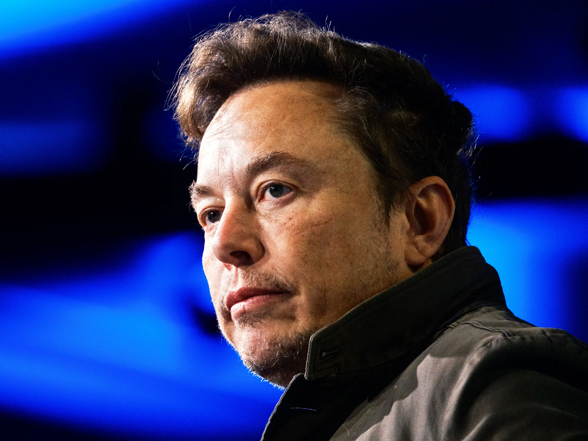

Elon Musk
ElonMusk80@gmail.com
ElonMusk80@gmail.com
Date : 18-9-21
An image with a text-top alignment.media company X, formerly known as Twitter, will remove a protective feature that lets users block other accounts, owner Elon Musk said on Friday in another controversial move for the company he bought last year. The block function on X allows a user to restrict specific accounts from contacting them, seeing their posts or following them. “Block is going to be deleted as a ‘feature’, except for DMs,” Musk said in a post on the platform, referring to direct messages.He said X would retain the mute function, which screens a user from seeing specified accounts but, unlike blocking, does not alert the other account to the action. The billionaire owner has described himself as a free speech absolutist, but some critics have said his approach is irresponsible. Researchers have found an increase in hate speech and antisemitic content on the platform since he took over, and some governments have accused the company of not doing enough to moderate its content. Removing or limiting the block feature might bring X into conflict with guidelines incorporated by Apple’s App Store and Alphabet’s Google Play. Apple says apps with user-generated content must have the ability to block abusive users. Google Play Store says apps must provide an in-app system for blocking user-generated content and users. X, Google and Apple did not immediately reply to requests for comment. Responding to a post from anti-bullying activist Monica Lewinsky urging X to keep the “critical tool to keep people safe online”, Chief Executive Linda Yaccarino defended Musk’s move.
Date : 22-9-19
Tesla Motors is finally ready to make sure it builds its $ 5 billion Giga factory in Nevada, setting up a five-nation competition for what is considered to be the world’s largest battery plant. But the scope of Tesla’s plans extends far beyond state borders.
Elon Musk plant a 10 million sq foot factory that may double the world’s lithium-ion battery capacity by the end of the year.
Tesla started in the Giga factory in 2017 and was capable of supplying 35 gigabytes hours of battery for an estimation of 5 lack electric vehicles, which Tesla expected to build up at the end of the year 2020.
The locals obviously will get benefited that includes construction jobs and economic impacts.
Tesla CEO Elon musk requires about 6500 employees to run this massive facility. The Giga factor could help in the development of the economic state of the country. The Tesla factory expected to reduce the emissions from the high-performance U.S. lithium-ion battery production units. This may lead to a reduction in the environmental pollution that are caused by other battery manufacturers in the world.
Elon Musk’s motive is to decrease environmental pollution by supplying electric vehicles all over the world. He also has an active role in the construction of underground tunnels in order to decrease traffic problems and even without expanding the roadways that damage the open fields. So he plans to make it underway and plans to share this with every country of the world.